- 首先，我们要知道 JavaScript 是一门解释性语言，也就是边解析（编译），边执行。
- 你可以理解为一段 JS 代码在正式执行前需要被 JavaScript 引擎编译，编译完成之后，才会进入执行阶段。
我们把 JavaScript 引擎在执行前的编译过程，程为JS 的预编译,在 JS 的编译阶段，会做以下三件事
- 语法检查
- JS 引擎会检查你的代码有没有什么低级的语法错误，以消除一些歧义。
- 如果有语法错误，则不会往下执行，直接抛出“语法错误”。如以下代码：
var a = 1; console.log(a); var b = 3； // b后面的; 分号是中文状态下的 // 代码并不会执行，打印出1，因为在预编译阶段有语法错误，所以直接抛出了误法错误 - 创建执行上下文 （Execution context）
- 执行上下文是 JavaScript 执行一段代码时所处的运行环境
- 关于执行上下文的相关细节，我们待会在下面详细讲解，这也是本章的重点。
- 生成可执行代码
- JavaScript 引擎并不认识我们写的 JS 代码，所以需要将 JS 代码转换为计算机能读懂的机器码（二进制文件）
一、什么是执行上下文
- 执行上下文是 JavaScript 执行一段代码时所处的运行环境
- MDN 官网中提到：作用域是当前的执行上下文
- 接下来我们就来明确下，哪些情况下代码才算是 “一段” 代码，才会在执行前进行预编译过程，并创建执行上下文环境。
- 主要有以下三种情况：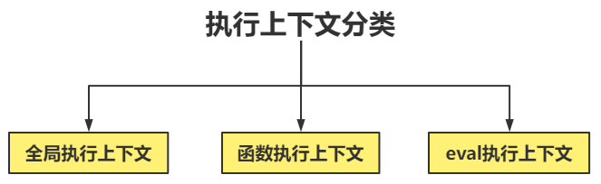
全局执行上下文
- 当 JavaScript 执行全局作用域中的代码时，会编译全局代码并创建全局执行上下文
- 整个页面的生命周期内，全局执行上下文只有一份。
- 只有当整个页面关闭后，全局执行上下文才会被销毁。即页面没有关闭前，这些变量对应的数据都保存在内存中。
引用的js文件等都在全局执行上下文里
// 代码在执行前，会预编译，并会创建全局执行上下文 // 以下代码在页面没有关闭前，是不会被销毁的，即当前数据还保存在内存中 var a = 1; var b = 2; function sum(a, b) { console.log(a + b); }函数执行上下文
- 当调用一个函数时，函数体内的代码会被编译，并创建函数执行上下文。
- 一般情况下，函数执行结束之后，创建的函数执行上下文就会被销毁。
var a = 1; var b = 2; function sum(a, b) { var c = a; var d = b; console.log(c + d); } sum(2, 3); // 调用函数以上代码创建了 全局执行上下文和 函数执行上下文
- 代码执行前，会预编译，并创建全局执行上下文，然后从上往下执行代码
- 执行到sum(2,3)时，他调用函数，调用函数时会对函数体内代码预编译，同时创建函数执行上下文
- 执行函数体中代码，执行完后，函数执行上下文就会被销毁,即函数体内的变量c和d不再占据内存空间
eval 执行上下文
- 在严格模式下，当使用 eval 函数时，eval 的代码会被编译，并创建eval执行上下文。
- 考虑安全性能问题，现在 eval 被禁用
- eval() 函数可以接受一个字符串为参数，并将其中的内容视为好像在书写时就存在整个程序中这个位置的代码。
- eval 通常被用来执行动态创建的代码，但是安全风险过高，如果传过来的是一段 JS 木马呢 ？
function foo() { eval("var a=1;var b=2;"); console.log(a + b); } foo(); // 在控制台输出 3
- 在严格模式下，eval()在运行时会有自己的执行上下文
- 此时，外部作用域是访问不到内部作用域的，所以
console.log(a + b);找不到a,b的值function foo() { "use strict"; eval("var a=1;var b=2;"); console.log(a + b); // 直接抛出错误 a is not defined } foo();
二、执行上下文栈
什么是 栈
LIFO？在算法那一章我们学习过栈这种数据结构，这里我们回顾下
- 什么是栈
- 栈是一种先进后出的数据结构，要弄明白什么是栈，我们先举一个生活中的例子来帮助大家理解
- 假如你现在有一个长长的圆筒，圆筒的一端是封闭的，另一端是开口，现在往圆筒底部放气球，那先放的是不是在圆筒的底部，后放的是不是在靠近圆筒的位置。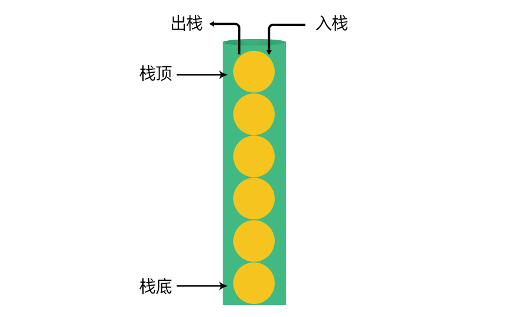
详细解读：
- 我们现在要从圆筒中取出气球，那我们是不是得先取离圆筒出口最近的一个，即取球时的顺序正好和放的时候的顺序是反的。
- 我们把圆筒比喻从栈，那放气球的过程叫入栈，拿气球的过程叫出栈；圆筒的底部称为栈底，圆筒出口的第一个气球位置叫栈顶。
栈 LIFO ： 是一种先进后出的一种数据结构。 插入一般称为入栈（PUSH），删除则称为出栈（POP）
- 什么是执行上下文栈（调用栈）
- 我们知道, 函数里面可以嵌套函数, 不同的函数调用又会形成不同的执行上下文环境
- 这些不同的执行上下文环境，我们统一放进一个栈中来管理。
我们把这种用来管理执行上下文的栈，称为执行上下文栈，又称调用栈
- 栈底为全局执行上下文, 每当有一次函数调用, 形成的函数执行上下文就会被
push进栈顶，即压栈 - 函数执行完, 该函数所对应的函数上下文将会被
pop出上下文栈,即出栈
- 我们用下面这个代码来演示，整个执行上下文栈的压栈和出栈过程
var a = 1; function fn1() { console.log("fn1"); function fn2() { console.log("fn2"); } fn2(); } fn1();
进栈
- 当页面打开，就会创建全局执行上下文，并将其压入执行上下文栈底。
- 然后执行全局上下文中代码，遇到fn1()调用，则会创建 fn1 的函数执行上下文, 压入执行上下文栈
- 然后执行 fn1 中代码，遇到fn2()调用，创建 fn2 的函数执行上下文,压入执行上下文栈。
- 接着执行 fn2 中的代码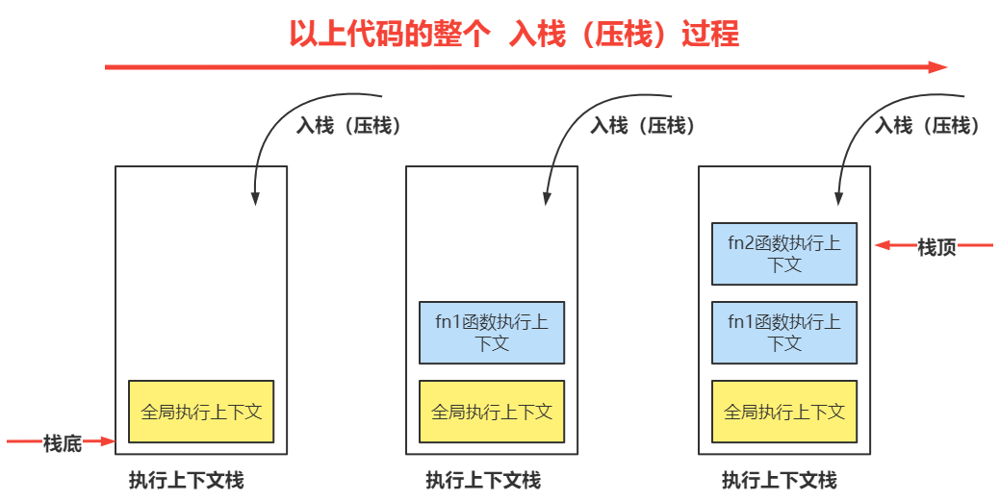
出栈
- fn2 执行完毕后, 对应的执行上下文从执行上下文栈中 pop 出
- 此时 fn1 也被执行完，对应的执行上下文也从上下文栈中 pop 出
- 全局上下文要在浏览器关闭后才会被销毁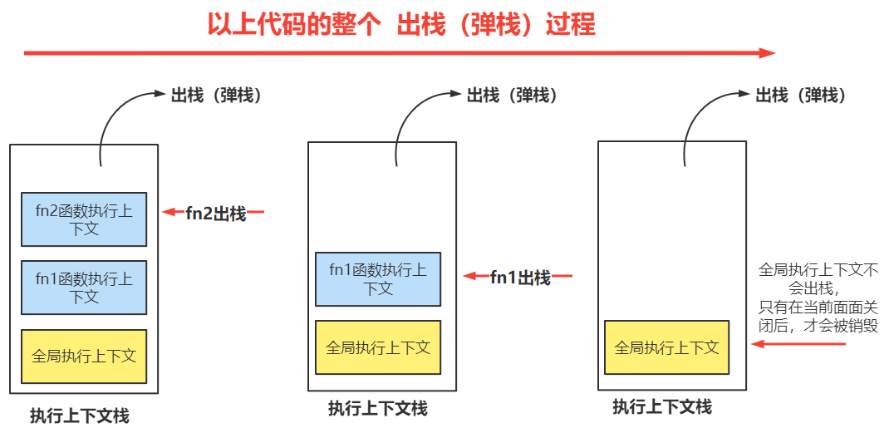
- 通过调试工具，来查看整个的压栈和出栈过程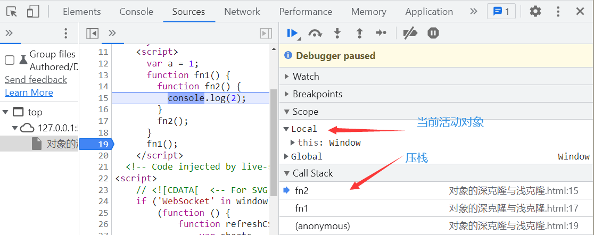
- 栈溢出
- 执行上下文栈是用来管理执行上下文的数据结构，不过要注意的是执行上下文栈是有大小的
- 当入栈的执行上下文超过一定的数目，栈对应的内存空间被占满后，JavaScript 引擎就会报错，我们把这种错误叫做栈溢出
递归代码，很容易出现栈溢出情况，如下代码
var i = 0; function a() { i++; } a();注：
- 不同的浏览为栈分配的内存空间大小是不—样的。
- 所以我们在使用递归时，要特别注意这一点，确保递归压栈时不会造成栈溢出。
三、 执行上下文组成
执行上下文中包含了四个部分：
- 变量环境： 其实就是我们之前提到的变量和函数提升，在代码执行前变量和函数会被提升到当前作用域的最前面。
- 外部环境： 其实就是我们之前了解的作用域链，他记录了当前作用域及他的外层作用域之间的关系，我们查找变量在当前作用域中找（当前变量环境中找）找不到再到外部外境（沿着作用域链去查找）
- this： 就是我们前面讲的this，函数上下文对象，谁把函数当成方法来调用，this 就指向谁
- 词法环境： ES6 中需要学习到的let 和 const 声明的变量，是保存在词法环境中。
变量环境
- 在变量环境中存在一个变量环境对象（viriable Environment），叫变量对象 。英文全称 variable Object 简称
VO- 在这个执行上下文中，所有由var声明的变量和函数等都存在于这个 “变量对象” 上。
- JavaScript 代码不能直接访问该 “变量对象” ，但是可以直接访问该对象的成员。(除全局上下文的变量对象window以外)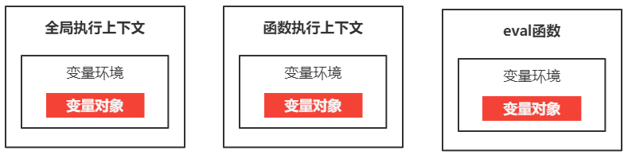
全局执行上下文中 - 变量对象
- 全局上下文是最外层的上下文，全局执行上下文中的变量对象就是window对象
- 因此全局变量和全局函数都会成为 window 对象的属性和方法。
- 在
Node环境中，全局执行环境是global对象 - 在全局上下文中，
this指向 window 对象注意： JavaScript 中没法直接访问到 “变量对象” ，除全局上下文的变量对象window以外
var a = 1; function fn() { console.log(2); } console.log(this === window); // true 全局上下文中，this指向window console.log(window.a); // 1 通过window对象的属性a可以访问到变量a window.fn(); // 2 通过window对象的方法fn可以访问到fn函数函数上下文中 - 变量对象
- 在函数执行上下文中，变量对象常常被称为“活动对象（Activation Object）简称
AO” ，因为变量对象是在进入函数执行上下文时被创建的（被激活）的。 - 刚开始，活动对象上只有
arguments这一个属性，其后函数中的变量、函数、参数都被保存在这个 活动对象（AO） 上，成为了这个活动对象的 属性 和 方法我们直接访问函数中的变量，参数，函数，arguments，本质就是在访问 “活动对象” 上的属性。
- 在函数执行上下文中，变量对象常常被称为“活动对象（Activation Object）简称
function sum(c) { var a = 2; var b = 3; console.log(arguments); console.log(a, b, c); } sum(1);
// 当前会创建全局执行上下文，然后执行到sum(1)时，会创建函数执行上下文
// 函数执行上下文中会创建一个活动对象，其内变量a,b和参数c，arguments都是活动对象的属性,包括 this
>在函数执行上下文中，this 对象保存在活动对象上的 this 属性上。
eval 执行上下文 - 变量对象
- 创建 eval 函数是为了将字符串转换为可执行的 JavaScript 代码。虽然看起来很强大，但不建议使用这个功能，因为我们无法控制它的权限。
- eval 函数的使用可能会使您的应用程序或服务受到注入攻击。 eval 函数接收到的字符串可能是恶意字符串，可以完全破坏您的数据库或应用程序。
- 这就是为什么不推荐使用 eval 函数的原因,也就不做介绍。
变量对象的创建过程
var sum=1; function fn(a,n) { var b = 2; function num() {} var c = function () {}; b = 3; } fn(1);
全局执行上下文中变量创建过程
- 当页面打开，碰到script标签，就会开始解析里面的代码，开始预编译
- 创建全局执行上下文，并创建window这个变量对象
- 全局执行上下文中声明的变量和函数，就成为了window对象上的属性和方法
- window.sum=undefined; window.fn=fn
- 预编译结束，开始从上往下执行代码
- window.sum=1
- 碰到fn(1) 开始调用函数
函数内部的变量对象创建过程
- 函数被调用，会创建函数执行上下文，并创建活动对象AO
var AO = {};
- 初始化活动对象的第一个属性arguments
// 1、创建 AO 变量对象 AO = { // 2、创建arguments属性，其属性值为Arguments对象 arguments: { 0: 1, // 实参 length: 1, // 实参个数 // ..... 其它属性省略 }, }; - 处理形参与实参
- 函数的 所有形参的名称和实参对应 组成变量对象的属性,
- 如果没有实参，属性值设为 undefined。
// 1、创建 AO 变量对象 AO = { // 2、创建arguments属性，其属性值为Arguments对象 arguments: { 0: 1, // 实参 length: 1, // 实参个数 // ..... 其它属性省略 }， // 3、 寻找函数形参，作为变量对象的属性，同时赋值 a:1, n:undefined, } - 处理函数体内的函数声明
- 函数体内的函数声明的名称和对应值变成变量对象的属性和值
- 如果变量对象已经存在相同名称的属性，则会完全替换这个属性。
- 没加var的是全局变量，不执行
上面这个过程，就是我们之前提到变量与函数提升
- 函数声明提升的优先级是高于变量提升，本质就是在变量对象初始化属性时，同名的方法会替换掉同名的属性。
- 如果是同名的函数，则以后面写在后面的为主。
// 1、创建 AO 变量对象 AO = { // 2、创建arguments属性，其属性值为Arguments对象 arguments: { 0: 1, // 实参 length: 1, // 实参个数 // ..... 其它属性省略 }， // 3、 寻找函数形参，作为变量对象的属性，同时赋值 a:1, n:undefined, // 4、寻找函数声明 function num(){ }，将num为变量对象属性，值为函数本身 num: function () {}, } - 处理函数体内的变量声明
- 变量声明的名称和对应值（undefined）组成变量对象的属性
- 到了执行阶段才会赋值，此时变量值都是undefined
- 如果变量名称与已经声明的形参或函数名相同，则变量声明不会覆盖已经存在的这类属性。
原因：变量与函数提升
- 变量对象的创建过程，就是我们之前提到的变量的提升，变量提升,提升的是变量，并不会提升值，所以创建出来的属性，默认值是 undefined
- 同时同名的变量不会覆盖同名函数，同名的变量和变量本质覆盖与不覆盖没有区别。
// 1、创建 AO 变量对象 AO = { // 2、创建arguments属性，其属性值为Arguments对象 arguments: { 0: 1, // 实参 length: 1, // 实参个数 // ..... 其它属性省略 }， // 3、 寻找函数形参，作为变量对象的属性，同时赋值 a:1, n:undefined, // 4、寻找函数声明 function num(){ }，将num为变量对象属性，值为函数本身 num: function () {}, // 5、寻找var声明的变量，将变量b作为变量对象的属性，值为undefined b: undefined, c: undefined, } - 预编译结束，开始从上往下执行代码
- 修改变量对象上属性 b 的值为 2
- 修改变量对象属性 c 的值
- 再次修改变量对象属性 b 的值
AO = { arguments: { 0: 1, length: 1, // ..... 其它属性省略 }, a: 1,//实质上是AO.a n:undefined, num: function num() {}, b: 3, // 1、修改属性b的值 c: function () {}, }; - 通过控制台，查看整个fn()函数执行完时，整个变量对象上的属性值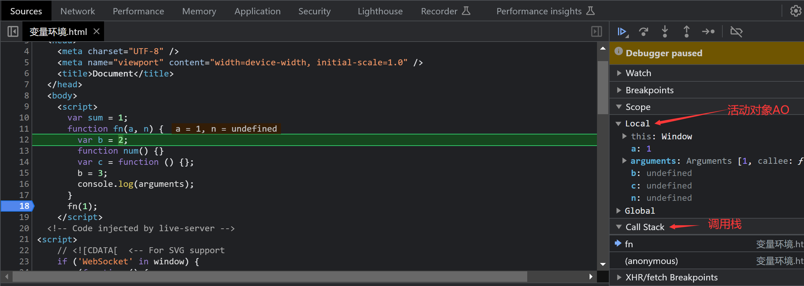
外部环境（outer）
- 其实，在 JS 中，每个函数都存在一个隐式属性
[[scopes]], 这个属性用来保存当前函数的外部执行上下文中的变量对象身上的一些属性, 由于在数据结构上是链式的, 也被称为作用域链。- 只有当内部执行上下文中引用了外部执行上下文中的变量（AO 对象上的属性或方法）时，其外部执行上下文中变量对象的属性值才会被记录在隐式属性
[[scopes]]中,除全局执行上下文中的变量对象window外。
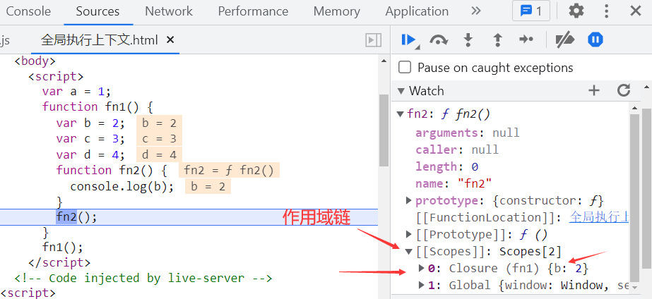var a = 1; function fn1() { var b = 2; var c = 3; var d = 4; function fn2() { console.log(b); } fn2(); } fn1();
作用域链
- 外部环境本质就是我们之前提到的作用域链，外部环境中记录了外部执行上下文中变量对象身上的一些属性和方法。
- 当我们在变量查找时，如果当前执行上下文的变量对象上找不到，则会去当前执行上下文的外部上下文的 “变量对象”（其实是闭包对象）上去查找。
- 如果找到就用，找不到就会一直找到全局执行上下文的变量对象
window身上。还找不到，就会报错。
- 变量查找过程
var a = 1; function fn1() { var b = 2; var c = 3; var d = 4; function fn2() { var e = 5; console.log(e + b + a); } fn2(); } fn1();
- 第一步：创建全局执行上下文
- 第二步：执行全局上下文中的代码
- 从上往下执行代码，首先变量 a 赋值为 1
- 同时遇到
fn1()，调用fn1()函数，创建函数执行上下文，并压入执行上下文栈
- 第三步：执行 fn1 函数上下文中的代码
- 首先给变量赋值
b=2，c=3，d=4，fn1 = function(){....} - 同时遇到
fn2()，调用fn2()函数，创建函数执行上下文，并压入执行上下文栈
- 首先给变量赋值
- 第四步：执行 fn2 函数执行上下文中的代码
- 首先给变量 e 赋值，
e=5 - 然后执行
console.log(e+b+a);代码 - 首先在当前作用域（执行上下文）中的词法环境中找变量 e，没有找到，再到变量环境的变量对象上找 e，找到e=5，并使用
- 然后在当前作用域中的词法环境中去找变量 b，没有找到，则到变量环境中的变量对象上找变量 b，没有找到，则沿着外部环境去其外层的作用域中去查找。
- 在外层作用域中查找时，也是先到词法环境中找，找不到再到变量环境中找，再找不到就再到其外部环境中去找，一层一层找，找到就用，找不到一直找到全局作用域中，还没找到，就报错。
- 变量 e，b，a 的查找流程图如下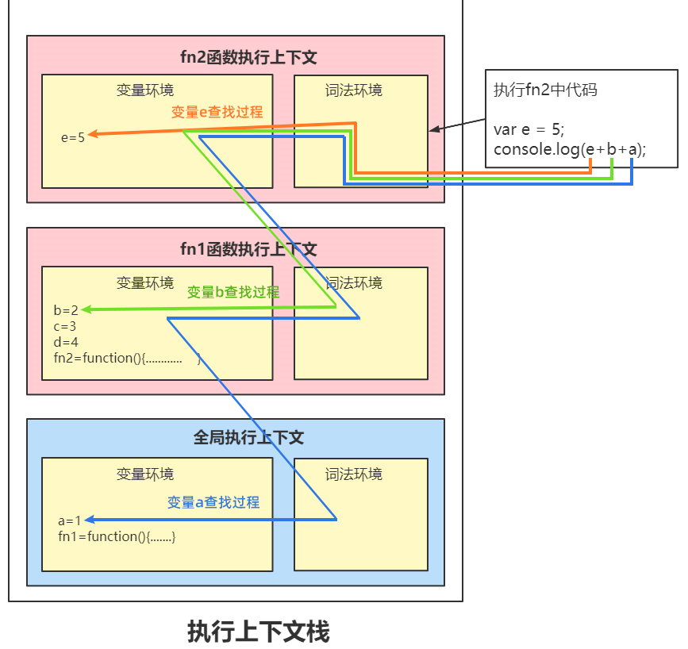
- 首先给变量 e 赋值，
- 第五步：fn2 执行完，开始出栈
- 第六步：fn1 执行完，开始出栈
- 全局执行上下文要等整个页面关闭后才会被销毁，才会出栈。
- 控制台演示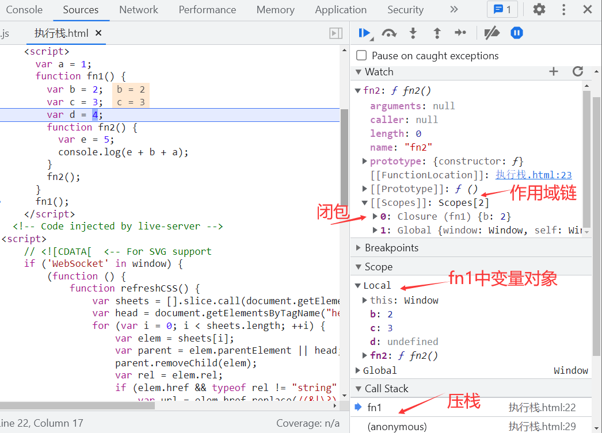
详细解读
- 只有内部函数引用了外部函数中的部分变量，部分变量才会被保存在函数的
[[scopes]]属性中- 内部函数在变量查找时，在自己作用域中找，找不到再到
[[scopes]]属性中一层一层向下找[[scopes]]属性中，本质记录的是全局作用域的变量对象 window 和每一次内部形成的闭包对象
词法环境
ES6中利用let和const声明的变量，会放在词法环境中。- 在变量查找时，首先会在词法环境中去查找，如果找不到，再到变量环境中查找。
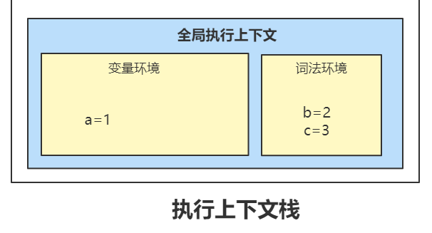var a = 1; let b = 2; const c = 3; console.log(a + b + c);
this 函数上下文
- 在函数中，其内部this指向把函数当成方法调用的上下文对象
- 参考下面的表格自己复习下
函数的调用方式 this 指向 对象.函数() 对象 函数() window IIFE 立即执行函数 数组下标 数组 call(对象,arg1,arg2) 对象 apply(对象，array) 对象 bind(对象，arg1,arg2) 对象 定时器中的回调函数 window DOM 事件处理函数 添加事件监听的元素 new 函数() 对象的实例
四、闭包
至于什么是闭包？我们暂且先放下，我们通过两个案例来理解，什么是闭包，什么情况下会形成闭包。
什么情况下会形成闭包
- 形成闭包的条件——情况一
- 内部函数访问外部函数的变量时，其内部就会形成闭包。
- 但这种方式，并不能保持闭包，因为函数执行完就被销毁了，其闭包对象也被销毁。
function fn() { var a = 1; var b = 2; function fn2() { // 内部函数访问了外部函数中的变量，这时候就形成了闭包， console.log(a); } fn2(); } fn();
- 闭包形成过程
- 当调用fn()函数时，其内部的fn2函数引用了fn函数中的变量a，这时fn函数就会形成闭包。
- 他内部创建了一个新对象，把内部函数用到的变量a和对应的值成为了这个新对象的属性和值，这个新对象就是我们说的闭包
Closure
- 闭包带来的便利-方便变量查找
- 当fn2()函数调用时，就会访问变量a，他首先会在自己作用域（执行上下文）中找，找不到
- 然后就在闭包对象中去查找，找到中了变量a。最终在控制台输入 1
- 假设没有闭包对象，那他要去外层作用域中找，外层作用域中如果有 100 个就变量，那要从 100 个变量中找到一个方便 ，还是把用到的那一个存好，直接拿来用方便呢？肯定是后者。
- 闭包销毁
- 最后fn2执行完就销毁，其对应的闭包也就随着销毁
- 所以这种情况下会形成闭包，但闭包不能被保持。所以我们很多时候讨论的闭包并不是这种情况。
但内部函数能快速访问到外部函数作用域中的变量，本质就是因为形成了闭包。
- 形成闭包的条件——情况二
- 内部函数使用了外部函数的变量，同时被返回到了外部函数的外面(被全局变量接收)，这时就会形成闭包
- 主要表现在于，在外部执行被返回的函数时，可以访问他在定义时所处环境中的变量
- 这种情况才是真正意义上的形成了闭包，因为闭包被保持下来，供后期使用
function fn() { var a = 1; var b = 2; function fn2() { console.log(a); } return fn2; } var fn3 = fn(); // 被赋值 fn3();
闭包形成过程
- 当代码执行到
fn3=fn()时，fn()被调用了，因为fn2函数引用了fn函数中的变量a，这时fn函数就会形成闭包 - 他内部创建了一个新对象，把内部函数用到的变量a和对应的值成为了这个新对象的属性和值，这个新对象就是我们说的闭包（Closure）
- 当代码执行到
闭包是如何保持的
- 然后
fn2函数的隐式属性[[Scopes]]数组中，多了一个新的对象，这个对象指向上面 fn 创建出来的闭包。 - 然后fn2被当成返回值，返回给到了变量fn3。
- fn()函数执行完，就被销毁了，但是他创建的闭包并没有销毁，一直存在内存中
- 因为fn3在何时调用，调用多少次这个说不定，只要 fn3 被调用，就会执行 fn2 中的代码，就会访问变量 a,所以 fn 函数形成的闭包并不会随着 fn 函数的销毁而被销毁，而是一直存在于内存中。
- 然后
闭包带来的便利-函数体外可以访问函数内部的变量
- 只要我们执行fn3，就相当于执行fn2中的代码，就会访问变量a，他在当前fn2的作用域中找不到，就会去他的隐式属性
[[Scopes]]即作用链中去查找，因为之间有闭包存在，所以他会先在闭包中找。找到了a，就打印出来。
- 只要我们执行fn3，就相当于执行fn2中的代码，就会访问变量a，他在当前fn2的作用域中找不到，就会去他的隐式属性
- 总结闭包形成的两种情况
- 情况一：
- 当内部函数访问了外部函数的变量时，就会形成闭包，但这种情况下闭包不能保持，内部函数执行完，闭包就销毁了。
- 情况二：
- 内部函数使用了外部函数的变量，同时被返回到了外部函数的外面，这时就会形成闭包。这种情况下闭包能被保持，一直在保存在内存中。被返回到外部的函数，不管何时执行，执行多少次，都可以访问到他在定义时所在作用域中的变量。
我们通常说说的闭包，指的是第二种情况下形成的闭包，因为第一种情况没有办法保持。
什么是闭包
- 闭包（closure）是一个函数以及其捆绑的周边环境状态（lexical environment，词法环境）的引用的组合。
- 换而言之，闭包让开发者可以从内部函数访问外部函数的作用域。
- 在 JavaScript 中，闭包会随着函数的创建而被同时创建。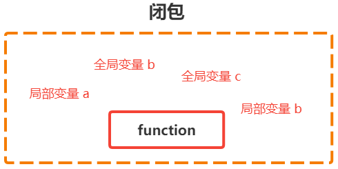
可以理解为是函数的一种性质，他能记住他在声明时所处的环境状态。那么不管后来函数在什么第三方被调用，他都能访问他在定义时所处作用域中的变量。
闭包与作用域链的关系
- 每个函数身上都有一个
[[Scopes]]属性， 这个属性用来保存当前函数所有用到的闭包对象和全局执行上下文对象(window)。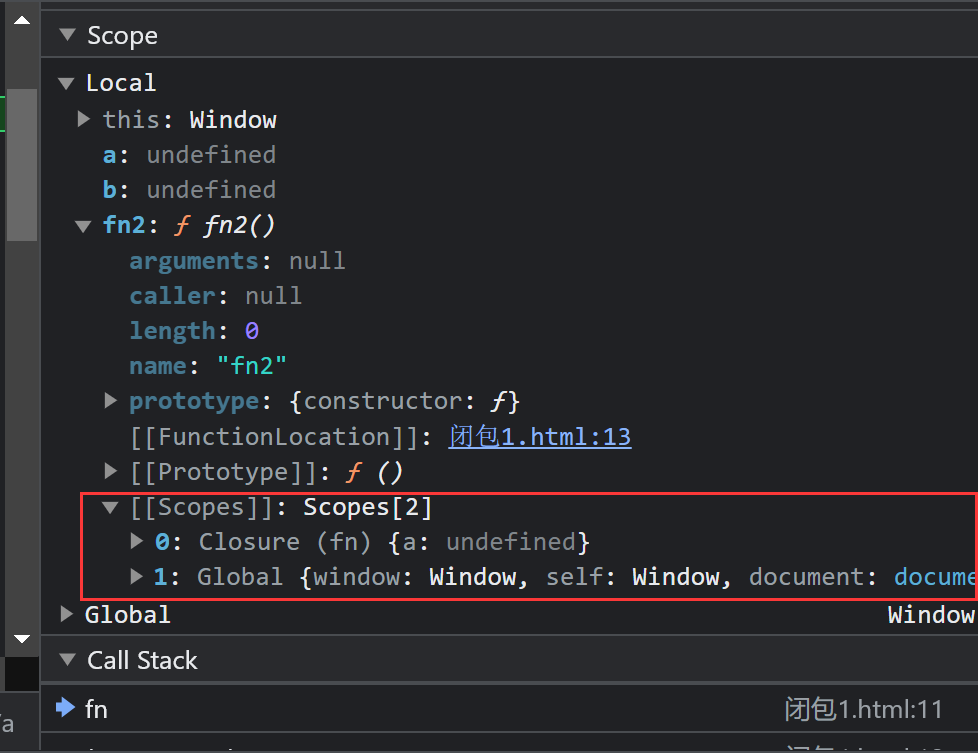
- 当内部函数引用了外部函数中的变量时，就会形成闭包，这个闭包对象中保存了内部函数引用外部函数中的那些变量。 当前函数身上的
[[Scopes]]属性中，保持了对这个闭包对象的引用。- 作用域链查找，本质就是先在当前作用域中找，如果找不到，就会去函数的
[[Scopes]]属性中保存的闭包对象和全局对象中去找。
闭包的用途
闭包有两大特性：记忆性、模拟私有变量
- 记忆性： 当闭包产生时，函数所处环境的状态会始终保持在内存中，不会在外层函数调用后被自动清除，这就是闭包的记忆性。
- 模拟私有变量： 我们可以把一些不需要的全局变量封装成“私有变量”。
- 闭包记忆性案例
- 创建体温检测函数 checkTemp(n)，可以检查体温 n 是否正常，函数会被返回布尔值，体温正常会返回true，体温不正常会返回false
- 但，不同的小区有不同的体温检测标准：
- 比如：A 小区体温合格线是 37.1 ℃，而 B 小区体温合格线是37.5 ℃，应该怎样编程呢 ？
function creatChack(standardTemp) { return function checkTemp(Temp) { return Temp < standardTemp; }; } //建立标准 var fn = creatChack(37.1); console.log(fn); // f checkTemp(Temp) { // return Temp < standardTemp;
// };
//输入体温
console.log(fn(38)); //false
- 模拟私有变量
- 题目：请定义一个变量 a，要求是能保证这个 a 只能被进行指定操作（如：加 1、乘 2），而不能进行其他操作，应该怎么编程呢 ？
function self() { var a = 1; return { getA: function () { return a; }, add: function () { a++; }, pow: function () { a *= 2; }, }; } var obj = self(); // 如果想在fun函数外边使用变量a，唯一的方法就是调用getA()方法 console.log(obj.getA()); //1 // 如果需要变量+1只能调用add方法 obj.add(); //1+1 console.log(obj.getA()); //2 // 如果需要变量+1只能调用pow方法 obj.pow(); //2*2 console.log(obj.getA()); //4 obj.pow(); //4*2 console.log(obj.getA()); //8
注意：
- 函数身上的
[[Scopes]]属性是对闭包对象的引用- 闭包是一个对象，是一个引用数据类型，存储在堆内存中
- getA(),add(), pow()中的a都是指向同一个堆内存地址
五、垃圾回收 GC
什么是垃圾回收（Garbage Collection）？
- 在现实生活中，所谓的垃圾，就是指用过了，不会再用的东西，就可以当成垃圾被处理掉。
- 在 JS 中，所谓的垃圾，你可以理解为那些不会再被使用的数据，就会被当成垃圾回收掉
- JavaScript 中 JS 引擎会自动回收不再使用的变量，释放其所占的内存，开发人员不需要手动的做垃圾回收的处理。
但最艰难的任务是找到那些变量将不会再使用，释放其“占用的内存”
- 我们来看下面几个例子，分析下，其中的变量否会被当成垃圾回收掉
下面代码执行完后，其变量 a 和 obj 还会占用内存空间吗？
function fn() { var a = 1; console.log(a); var obj = { name: "张三", age: 23, }; console.log(obj); } fn(); // 执行函数// 上面fn()函数执完后，变量中的a 和obj就会被销毁掉，不会再占用内存的空间了。
// 当然垃圾回收，并不会立刻马上就回收，他可以马上，也可以会等一会儿，但时间不会太久
// 函数执行完，里面的数据都不会再被其它对象引用，也就会当成垃圾被处理掉下面代码执行完后，其变量 a 和 obj 还会占用内存吗 ？
function fn() { var a = 1; var obj = { name: "张三", age: 23, }; window.a = a; window.obj = obj; } fn(); // 执行函数 // fn()函数执行后，变量a和obj被赋值给了window对象的属性，也就是全局对象window保持了对变量a和obj的引用。说不定什么时候我们就可以需要用到window.a和window.obj // 所以这种情况下 变量a被销毁，但是window.a上的a属性和obj中的引用对象并不会被销毁 // 但这里的obj和window.a并不是垃圾，因为我们在后面还需要用到他。 // 以上变量占用内存，是符合用户预期的下面代码执行完后，a 和 b 还会占用内存吗 ？
function fn() { var a = 1; var b = 2; function sum() { console.log(a + b); } return sum; } var s = fn(); // 调用函数 s(); // 调用函数// 上面代码执行完后，a，b并不会被销毁会，因为形成了闭包，我们不知道什么进候，我们还会调用s();
// 如果我们把变量a,b销毁了的话，那我们后面如果要调用s()，那不就会报错吗？
// 这种情况下闭包就会造成变量不能被销毁，一直占用内存。那这算是内存泄露吗？
// 这种情况，我们是有意想要形成闭包，人为的希望局部变量a和b能一直保存在内存中，所以不能算内存泄露
总结：
- 如果某些数据我们未来还有可能会用到，那么他一直占用内存是符合用户期望的，并不能算垃圾，所以也不能当成垃圾回收掉。
- 只有那些被执行完，未来不可能再用到的数据，就是垃圾，就可以当成垃圾被回收掉。
- 那 JS 是如何判断那些数据未来永远都不可能用到呢 ？然后把他当成垃圾回收掉呢 ？
JS 中垃圾回收的两种策略
垃圾回收主要有两种策略，标记清理和引用计数。
- 引用计数
- 引用计数其实是一种比较老的垃圾回收策略
- 引用计数就是追踪值被引用的次数。
- 声明变量并给它赋一个引用类型值时，这个值的引用数为 1，如果同一个值又被赋给另一个变量，那引用数+1
- 如果保存该值引用的变量被其它值覆盖了，则引用数减 1
- 当引用计数为
0时，表示这个值不再用到，垃圾收集器就会回收他所占用的内存。
var a = [1, 2, 3]; // [1,2,3]的引用计数为1 var b = a; // 变量b也引用了这个数组，所以[1,2,3]的引用数为2 var a = null; // [1,2,3]的引用被切断，引用数-1，所以[1,2,3]的引用数为1 // 如果只是到这里，那[1,2,3]不所占的内存不会被回收 var b = null; // [1,2,3] 的引用被切断，引用数-1，所 [1,2,3]的引用数为0 // 到这里，垃圾收集器在下一次清理内存时，就会把[1,2,3]所占的内存清理掉
- 但引用计数有一个很大的坑，就是循环引用时，会造成内存永远无法释放。
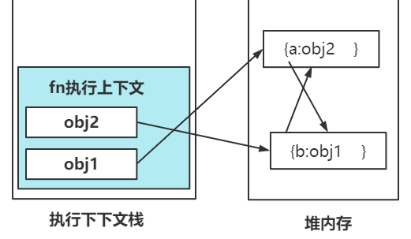function fn() { var obj1 = {}; var obj2 = {}; obj1.a = obj2; obj2.a = obj1; } fn(); // 这种情况下，fn函数执行完后，其内部的obj1和obj2已经没有用了，可以被回收了。 // 但引用计数统计到他们引用数>0,则 obj1和obj2就没有办法被清理了，因为引用数永远不可能为0
- fn 执行上下文在代码执行完后，就出栈，意味着 obj1 与 obj2 被销毁，不会再有指向堆内存中的引用
- 但是堆内存中的数据，引用数>0,所以永远都不会被销毁
- 标记清理
- 这个算法假定设置一个叫做根（root）的对象（在 JavaScript 里，根是全局对象
window） - 垃圾回收器将定期从根开始，找所有从根开始引用的对象，然后找这些对象引用的对象……
- 从根开始，垃圾回收器将找到所有可以获得的对象和收集所有不能获得的对象。
- 那些无法从根对象查询到的对象都将被清除
如果用标记清理的方式来处理垃圾回收，则就不会出现上面循环引用的问题，造成垃圾不能回收了
因为函数调用之后，两个对象 obj1 和 obj2 都无法从全局对象出发获取。因些，他们将会被垃圾回收器回收掉。从 2012 年起，所有现代浏览器都使用了标记 - 清除垃圾回收算法
- 这个算法假定设置一个叫做根（root）的对象（在 JavaScript 里，根是全局对象
JS引擎的自动垃圾回收功能并不是全能的
手动标记垃圾
- 通过上面两种垃圾加收的策略，我们知道，在全局作用域中的变量永远都可以从全局对象上获取到。所以永远不会自动回收。
- 所以我们在写代码时，尽量要避免不要把一些变量设置为全局变量，如果实在要设为全局变量，那我们使用完后不再需要，那我们就需要手动将其标注为垃圾，让垃圾回收器回收掉。
- 手动标记垃圾的方式，本质就是切断引用，常用的方式就是把变量的值重新赋值为
nullvar obj = { name: "张三", age: 23, }; // 标记为垃圾，垃圾回收器就会自动回收掉内存中的 { name:'张三',age:23} 这个对象占用的空间 obj = null;
总结
- 所谓的垃圾可以理解为，非用户预期的内占存用，那么这些占用内存的数据就可以理解为垃圾，应该回收掉。如果是用户预期的内存占用，那都不能算是垃圾。
- 如果有些变量我们不再需要，而垃圾回收器无法识别，那我们就可以手动将其标记为垃圾。即把变量的值起来
null
闭包与内存管理
- 我们经常听说闭包会造成内存泄露，所谓内存泄漏是指程序中已动态分配的内存由于某种原因未释放或无法释放
- 那闭包会造成内存泄露吗 ？ 我们来看下这段代码：
// 设置当地的一个参考分数线，然后输入你的分数，查看是否超过分数线 function compare(score1) { return function (score) { if (score1 > score) return "分数线过底不达标"; return "恭喜，分数线超过一本"; }; } // 北京1本录取分数线 var fn = compare(530); // 小明的分数是540 console.log(fn(540));
- 代码解读
- 上面代码中的
score1变量在页面没有关闭前，永远都不会被销毁 - 因为内部函数作为返回值被返回，同时内部函数引用了变量
score1，所以就形成了闭包。闭包对象中包含了属性score1， - 但是，我们使用闭包，本质也是为了用他的这个特性，希望局部变量能被保存在内存中，不要销毁。如果从这个角度来看，闭包并不能说会造成内存泄露。
- 上面代码中的
- 本质上闭包是有意的将变量保存在内存中，是用户预期的内存占用，所以不能算是内存泄露。
- 如果因为不小心误用了闭包，而造成某些数据一直占用内存而不能被回收，那就可以理解为因为误用闭包而造成的内存泄露。因为闭包中的数据，肯定是不能被垃圾加收的。
- 不能滥用闭包，否则会造成网页的性能问题，严重时可能会导致内存泄漏
区分内存泄露和内存溢出
- 内存泄露：是指程序在申请内存后，无法释放已申请的内存空间，一次内存泄露危害可以忽略，但内存泄露堆积后果很严重，无论多少内存，迟早会被占光。
- 内存溢出： 是指程序在申请内存时，没有足够的内存空间供其使用，内存不足。
六、IIFE 立即执行函数
- 什么是 IIFE 立即执行函数?
- IIFE （Immediately Invoked Function Expression）（立即调用的函数表达式）
- 是一种特殊的 JavaScript 函数写法，一旦被定义，就立即被调用
- 语法：
声明一个匿名函数，也就是没有名字的函数，然后用()把匿名函数转为 “函数表达式”，然后再调用
- 写法：
// 写法一 (function () { // 函数体语句 })();
// 写法二
(function () {
// 函数体语句
})();
// 以下是错误写法
// 函数不能直接加圆括号被调用
function(){
// 函数体语句
}();
温馨提示：
- 我们之前说，直接用 function 声明的函数称为函数声明，那这里为什么称为函数表达式呢 ？
- 是因为
()括号的功能，他将函数变为了表达式，然后()括号后面的()括号，表示执行函数
- 形成 IIFE 的其它方法
- 除了用
()包裹函数声明，将函数声明转为“函数表达式”之外 - 我们还可以在函数声明前添加
-或+号，来将函数声明转为“函数表达式”，然后再调用
(function () { // 函数体语句 })(); - 除了用
+(function () {
// 函数体语句
})();
-(function () {
// 函数体语句
})();
- IIFE 的作用一 ——为变量赋值
//写法2：使用IIFE- 当我们给变量赋值时，其值需要一些较为复杂的计算才能得到，这时候就可以用立即执行函数来实现
- 使用 IIFE 显得语法更紧凑
// 获取一个随机颜色 //写法1： var arr = ["red", "pink", "skyblue", "khaki"]; function color() { var i = (Math.random() * arr.length) >> 0; return arr[i]; } console.log(color());
var color = (function () {
var arr = [“red”, “pink”, “skyblue”, “khaki”];
var i = (Math.random() * arr.length) >> 0;
return arr[i];
})();
console.log(color);
- 以上写法，函数不会被其它对象引用，也不能在其它地方被执行。
- 如果你的某个函数只是为了一次求值，其它地方也不会再使用他，则可以用
IIFE来实现。
- IIFE 的作用二 ——将全局变量变为局部变量
在很多情况下，我们希望将全局变量转为局部变量保存起来。
情况一：
var arr = []; for (var i = 0; i <= 5; i++) { arr.push(function () { console.log(i); }); } arr[0](); // 6 arr[1](); // 6 arr[2](); // 6 arr[3](); // 6 arr[4](); // 6- i是全局变量，i=6;函数arri内没有声明变量i,所以只能向外查找变量，得到i=6
情况二：
var arr = []; for (var i = 0; i <= 5; i++) { // IIFE 本质是，在每一次循环，形成了一次闭包 (function (i) {//这里的i是形参，每次循环都会声明变量 arr.push(function () { console.log(i); }); })(i);//这里的i是实参 }arr0; //0
arr1; //1
arr2; //2
arr3; //3
arr4; //4
- arguments.callee
- arguments 对象身上有一个 callee 属性，是指向 arguments 对象所在函数的指针。
- 通过arguments.callee能获取到 arguments 对象所在的函数。arguments.callee已经被弃用，不应该再使用了，这里只当了解。
- arguments.callee 的作用
- 当我们需要在一个匿名函数内部，调用这个函数自身时，他就非常有用了
// 输入5的阶乘 var n = (function (n) { if (n == 1) return 1; return n * arguments.callee(n - 1); })(5); console.log(n);通常在递归调用匿名函数时，就可以用
argument.callee来找到匿名函数
七、JavaScript 错误处理
常见错误类型
代码执行过程中会发生各种类型的错误，每种类型的错误都对应一个错误对象，常见的错误类型有以上 8 种
- SyntaxError 语法错误
- ReferenceError 引用错误
- TypeError 类型错误
- RangeError 范围错误
- URIError URI 错误
- EvalError eval 错误
- InternalError 内部错误（非标准）
- Error 错误对象，用于自定义错误
1、SyntaxError 语法错误
- JavaScript 引擎发现了不符合语法规范的代码，会出现此错误
// 变量名不规范 var this = 1; var 2a=3;
// if 少了 }
if (1) {
console.log(2);
ReferenceError 引用错误
- 会在找不到对象时发生，比如常见的访问不存在的变量时，就会报引用错误
console.log(a); // a变量不存在 var num = c; // c变是不存在TypeError 类型错误
- 当变量不是预期类型时，就会引发这种类型错误。
- 比如常见引发这一错误的行为：把一个基本数据类型当函数调用。
var a = 1; a();console.log(“name” in true); // true不是一个对象
var arr = [1, 2, 3];
console.log(arr.call(null)); // arr 不是一个函数RangeError 范围错误
- 当数字超出允许的值范围时，将会抛出此类型的错误
var arr = [1, 2, 3]; arr.length = -1; // 数组长度var num = 1.233;
num.toFixed(-1); // 参数在0-100之间URIError URI 错误
在了解 URIError 错误之前，我们先来了解下什么是 URI、URL、URN
- URI（Uniform Resource Identifier）：统一资源标识符 ，用来唯一标识资源，是一种语义上的抽象概念
- URL（Uniform Resource Locator）：统一资源定位符，用来定位唯一的资源， 必须提供足够的定位信息
- URN（Uniform Resource Name）：统一资源名称，定义了资源的身份（命名）
他们三者的关系如下图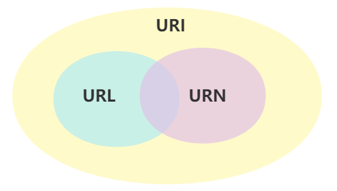
如果用一个人来做比喻的话
- URN 相当人的身份证号，唯 一标识。
- URL 相当于找到这个人的方式，如住址: x 省 xx 市 xx 区 … xx 单元 xx 室的身份证号为 xxx 的人
- URI 相当身份证，上面有身份证号，也有地址。
如果用一个网址来表示的话
- URL: https://www.arryblog.com/guide/html5/html-html5-course.htm
- URN:guide/html5/html-html5-course.htm
- URI: 可以是上面的 ULR，也可以是 URN
URIError 错误
- URL 错误只会在
encodeURI()和decodeURI()传入了格式错误的 URI 时发生。但我们很难看到这种错误，因为前面两个函数非常稳键。 encodeURI()对传入的 URI 进行编码decodeURI()对传入的 URI 进行解码
var url = "https://www.arryblog.com/html/文档笔记.html"; console.log(encodeURI(url)); console.log(decodeURI("dd78%"));- URL 错误只会在
EvalError eval 错误
- 在使用
eval()函数时发生异常时抛出错误。因为eval被禁用，所以了解就好。
- 在使用
InternalError（非标准）内部错误
- 该错误在JS 引擎内部发生发生异常时会抛出。如果真发生了这种错误，很可能代码哪里弄错了或者有危险了。
Error 自定义错误
throw new Error("自定义错误");
try … catch 语句
- try…catch 语句用来处理 JS 中的异常
- 语法
try { // 可能会出错的代码 } catch (e) { // 出错时要做什么 }
- 如果try块中的代码发生错误，则会立即退出执行，并跳到catch块中，catch块此时会接收到一个对象，这个对象包含发生错误的相关信息。
- try捕获到错误后,不会再执行try错误后的代码，同时将错误交给catch来处理，然后再执行后面的代码
var a = 1; try { // 可能出错的代码 a(); console.log(22); // 不执行 } catch (e) { // 出错时要做的事 console.log(e); // 执行 } console.log("try后面代码" + a); // 执行
- finally 子句
finally子句是try...catch语句中的一部分，为可选的- 不管try中代码是否发生错误，最终都会执行
finally子句中的代码
- 语法
try { // 可能会出错的代码 } catch (e) { // 出错时要做什么 } finally { //永远都会执行的代码 }
var a = 1; function fn(a) { try { // 可能出错的代码 a(); return 1;//不执行 } catch (e) { // 出错时要做的事 return 2; } finally { return 3;//执行 } } console.log(fn(a));
- try和catch中的return 语句也无法阻止 finally 代码块的执行
throw 抛出自定义错误
- throw 操作符，用于抛出自定义错误。throw 操作符后面必须有一个值，值可以是任意类型。
throw "123"; throw "abc"; throw true;
console.log(2); // 不会被执行
// 使用 throw操作符时，代码立即停止执行，除非用try…catch捕获了抛出的错误
- throw 与 try…catch 结合
- 可以自定义一个错误类型的消息，浏览器会像处理自己生成的错误一样来处理这个自定义错误
//当输入的实参不是数组时会报错 function fn(arr) { try { return arr.slice(0, 1); } catch (e) { throw new TypeError("arr参数，必须是一个数组"); } console.log(arr); // 上面抛出错误，这里不会执行 } fn(1);
八、LHS 和 RHS 查询
LHS字面理解是
Left Hand Sid即左手边，RHS字面理解是Right Hand Side即右手边。
- LHS 和 RHS 片面的理解
一般简单片面的理解为赋值操作符的左边和右边
- 当变量出现在赋值操作符的左侧时进行LHS 查询，出现在右侧时进行RHS 查询
- LHS 查询是试图找到变量的容器本身，然后对其赋值
- RHS 查询是试图找到变量的中对应的值
var a; var b;
a = 1;
b = a;
- 代码解读
① 编译阶段
- 会在当前作用域中声明 2 个变量 a 和 b
② 执行阶段
- a = 1，这里的
a会进行LHS查询，查询是否存在变量 a，并不关心 a 的值是什么。如果变量 a 存在，就给他赋值为 1- b = a，首先会对
a进行RHS查询，查询是否存在变量 a，存在，并把对应的值 1 拿到- 然后再对
b进行LHS查询，查询是否存在变量 b，存在，并把对应的值 1 赋值给到变量 b
- LHS 和 RHS 更准确的理解
通过上面分析，我们知道
- LHS 查询只关心是否存在这个变量，并不关心变量对应的值是什么
- RHS 查询除了关心变量是否存在之外，还关心变量中对应的值，因为最终就是为了找到变量对应值。
所以，更准确的说 - LHS 查询可以理解为赋值操作的目标是谁 ？ 即我要把值赋值给谁
- RHS 查询可以理解为赋值操作的源头是谁？ 我要用什么来内容完成赋值
function fn(c) { console.log(c); console.log(b); console.log(a); a = 1; var b = a; b(); } fn(2);
- 代码解读
- ① 全局代码运行时
编译阶段
- 声明函数
fn，fn 是 window 对象身上的属性，即window.fn=function(){......}
执行阶段
fn(2)在调用前，会对 fn 进行 RHS 查询，查询是否存在 fn，并拿到 fn 的值，然后开始执行
- ② fn 函数调用时
编译阶段：
- 在当前作用域中声明 2 个变量
c和b，同时c = 2- 这个过程 c 也会进行 LHS 查询，找到是否存在变量 c，然后存在将值 2 赋值给到他
执行阶段：
- 当执行到
console.log(c)，会对 c 进行 RHS 查询，取得 c 的值为 2，还会对 console 进行 RHS 查询- 当执行到
console.log(b)，会对 b 进行 RHS 查询，取得 c 的值为 undefined，对 console 进行 RHS 查询- 当执行到
console.log(a)，会对 c 进行 RHS 查询，发现找不到变量 a，然后报出 引用错误，….- 当执行到a = 1，会对 a 进行 LHS 查询，发现找不到变量 a
- 在非严格模式下，此时会全局作用域中创建一个同名的变量，然后将 1 赋值给 a
- 在严格模式下，会报 引用错误，找不到变量 a
- 当执行到b = a
- 首先对 a 进行 RHS 查询，找到变量 a，并取得 a 的值 1
- 然后对 b 进行 LHS 查询，找到变量 b，把对应的值 1 赋值给 b
- 当执行到b()时，会对 b 进行 RHS 查询，找到了，但 b 的值不是一个函数，你对 b 执行函数调用，会抛出类型错误
（TypeError）
- 总结：LHS 和 RHS
LHS 查询- 只关心有没有要查找的变量，并不关心变量的值是多少
- 如果找到这个变量，就将对应值赋值给他。
- 如果找不到，在严格模式下，会报引用错误，非严格模式下，会在全局作用域中创建一个同名的变量
- LHS 查询可以理解为 赋值操作的目标是谁 ？ 即我要把值赋值给谁
RHS 查询
- 他不仅关心有没有要查找的变量，还关心变量的值是多少，最终是要取到变量的值。
- 如果找不到变量，则会报引用错误，如果找到，则把对应的值拿到
- 如果对找到的变量，做不合理的操作，会抛出类型错误（TypeError）
- RHS 查询可以理解为 赋值操作的源头是谁 ？ 我要用什么来内容完成赋值
JS 引擎在查找某个变量时，会先判断是要 LHS 查询还是 RHS 查询，然后再根据对应规则去查询变量，做相应处理
九、单线程的 JavaScript
我们都知道 JS 语言的一大特点就是单线程，也就是说，同一个时间只能做一件事。那 JS 为什么要设置成单线程的呢 ？为什么不设置成多线程呢 ？
- JavaScript 的单线程，与它的用途有关。作为浏览器脚本语言，JS 的主要用途是与用户交互，以及操作 DOM。这就决定了他只能是单线程的，否则会带来很多复杂的同步问题。
- 假设 JS 同时有两个线程，一个线程在某个 DOM 节点上添加内容，另一个线程删除了这个节点，这时浏览器应该以哪个线程为准 ？
所以，为了避免复杂性，从一从一诞生，JavaScript 就是单线程，浏览器中的 JS 执行和 DOM 渲染共用一个线程。
十、同步任务与异步任务
- JS 是单线程的，那就意味着所有的任务需要排队，前一个任务结束，才能执行后一个任务。如果前一个任务耗时很长，后一个任务就不得不一直等着。
- 如果因为计算量大，CPU 忙不过来，倒也算了，但是很多时候 CPU 是闲着的，因为
IO设备（输入输出设备）很慢（比如受网络的影响，外部请求加载一张图片等会很慢），就不得不等着结果出来，再往下执行。这样就造成了 CPU 资源的浪费，因为 CPU 是闲着的，但后面还有很多任务要做又不能做，这样代码的执行效率就变得很低了，因为某个任务过长，就会造成主线程阻塞。- JS 的语言设计者也意识到了，这时主线程完全可以不管 IO 设备，挂起处于等待中的任务，先运行排在后面的任务。等到 IO 设备返回了结果，再回过头，把挂起的任务继续执行下去。
于是，JS 中把任务分成两种：同步任务（synchronous）和异步任务（asynchronous）
- 同步任务：是指在主线程上排队执行的任务，只有前一个任务执行完毕，才能执行后一个任务
- 异步任务：是指不进入主线程，而进入“任务队列”（task queue）的任务，只有等主线程任务执行完毕，”任务队列”开始通知主线程，请求执行任务，该任务才会进入主线程执行
- JS 中那些任务是属于同步任务，那些属性异步任务呢 ？
同步任务 异步任务 大部分代码都是同步任务 事件、setTimeout、setInterval、requestAnimationFrame、Ajax、fetch、MutationObserver、Promise 的 then 和 catch 方法、async 函数 你可能有这样的疑问：
- JS 是单线程的，那他的异步任务是谁来负责的，如何被加入到任务队列，这就需要了解浏览器的进程与线程。
十一、浏览器进程与线程
- 首先我们要知道 JS 是单线程的，所谓的单线程是指用来执行 JS 代码的线程只有一个。
- 但浏览器是多线程的，所以 JS 执行时遇到异步任务，如http请求，这些请求是由浏览器的相关线程来完成的，等请求有结果时，再把需要 JS 线程来执行的任务（通常以回调函数的形式）加入到任务队列等着 JS 主线程空闲时来执行。
浏览器是多进程和多线程的，那进程和线程是什么关系呢 ？
分类 说明 进程 是操作系统资源分配的最小单元。一个进程拥有的资源有自己的堆、栈、虚存空间（页表）、文件描述符等信息（可以把他理解为一个独立运行的程序） 线程 是操作系统能够进行运算调度的最小单元。它被包含在进程中，是进程中实际运行的单位。一个进程中可以并发多个线程，每个线程执行不同的任务
生活类比 - 解释进程与线程
- 如果把进程看作一个部门，一个部门都需要完成指定的任务，那就会为完成这些任务配套相关的资源。
- 那线程就相当于这个部门的人，他们共享这个部门的资源，然后每个人又有自己不同的事情要做，多个人（多个线程）之间相互配合，然后一起把这个任务完成。
温馨提示：
- 线程共享进程资源，包括内存空间和操作系统的权限
- 进程中的任意一个线程执行出错，都会导致整个进程的崩溃
- 进程和进程之间也是可以互相通信，就好比部门和部门之间也是可以互相通信的一样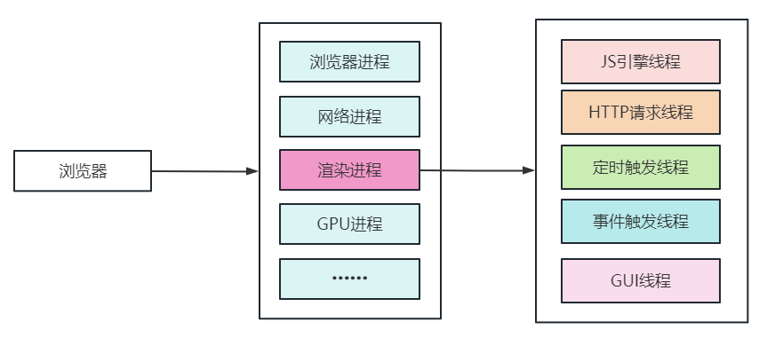
仅仅打开一个网页，就需要具有以下 4 个进程
| 进程 | 功能 |
|---|---|
| 浏览器进程 | 主要负责界面显示、用户交互、子进程管理、同时提供存储等功能 |
| 渲染进程 | 核心任务是将 HTML、CSS 和 JS 转换为用户可以与之交互的网页，提成版引擎 Blink 和 JS 的 V8 引擎都是在该进程中，默认情况下，Chrome 会为每个 Tab 标签创建一个渲染进程。 |
| GPU 进程 | 负责整个浏览器界面的渲染，早期主要是为了实现 3D CSS 效果 |
| 网络进程 | 主要负责页面的网络资源加载 |
| 渲染进程中的线程 | 功能 |
|---|---|
| JS 引擎线程 | JS 引擎线程也称为 JS 内核，负责处理 Javascript 脚本程序，解析 Javascript 脚本，运行代码；JS 引擎线程一直等待着任务队列中任务的到来，然后加以处理，一个 Tab 页中无论什么时候都只有一个 JS 引擎线程在运行 JS 程序 |
| HTTP 请求线程 | XMLHttpRequest 连接后通过浏览器新开一个线程请求；检测到状态变更时，如果设置有回调函数，异步线程就产生状态变更事件，将回调函数放入事件队列中，等待 JS 引擎空闲后执行 |
| 定时器触发线程 | 主要负责负 setTimeout，setInterval 定时器计时的，计时完毕后，将事件添加到处理队列的队尾，等待 JS 引擎空闲去处理 |
| 事件触发线程 | 用来控制事件循环，当 JS 引擎执行到点击事件，异步事件等等，都会将对应的任务添加到事件线程中，当事件符合触发条件时，会将事件添加到处理队列的队尾，等待 JS 引擎空闲后去执行（主要负责将准备好的事件交给 JS 引擎去执行） |
| GUI 线程 | 负责渲染浏览器页面，解析 HTML、CSS、构建 DOM 树，构建 CSSOM 树，构造渲染树和绘制页面。当界面需要重绘或某种操作引发回流时，该线程就会执行。不过要特别注意： GUI 线程和 JS 引擎线程是互斥的，当 JS 引擎执行时 GUI 线程会被挂起，GUI 更新会被保存在一个队列中等到 JS 引擎空闲时立即被执行 |
十二、同步与异步执行顺序
首先 JS 会将所有同步任务执行完再去执行异步任务，如果在执行同步任务的过程中遇到了异步任务，会先把他交给浏览器的相关线程来完成，完成之后，再把需要 JS 线程来执行的任务放到 “任务队列” 中等着，等同步的代码全部执行完，再到任务队列取出异步任务，进入主线程并执行。
- 异步任务的执行顺序是先加入队列的先拿出来执行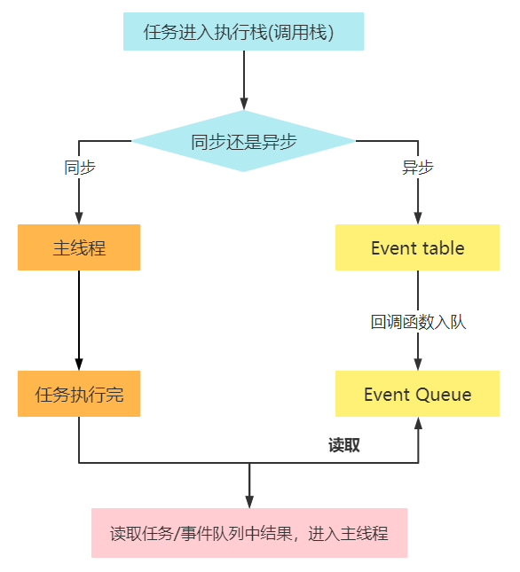
console.log(1); console.log(2); setTimeout(function () { console.log("定时器1000"); }, 1000); console.log(3);
setTimeout(function () {
console.log(“定时器0”);
}, 0);
console.log(4);
……
// 最后执行结果 1，2，3，4 定时器0 定时器1000
十三、宏任务与微任务
JS 中的任务分为同步与异步，其中异步任务又分为两种：
- 宏任务（Macro-take）
- 微任务（Micro-take）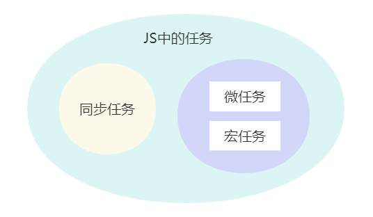
| 宏任务 | 微任务 |
|---|---|
| script 标签（JS 整体代码）、setTimeout、setInterval、Ajax、DOM 事件等 | Promise 的 then 和 catch 方法、MutaionObserver、async/await 等 |
任务队列的执行过程：
- 1、刚开始，调用栈空。微任务队列空，宏任务队列里有且只有一个 Script 脚本（整体 JS 代码）。这时首先执行的就是这个宏任务。（所以一开始程序执行时是没有微任务的）
- 2、整体代码作为宏任务进入调用栈，先执行同步代码，在执行的过程中遇到宏任务或微任务，就将他们加入分别加入到宏任务队列或微任务队列。
- 3、上一步的同步代码执行完后出栈，接着从微任务队列中取出微任务（先添加到微任务队列的先执行）并执行，在执行微任务过程中产生新的微任务，会添加到微任务队列，等微任务中的任务全部完成后，并不会马上执行宏任务，而是会进行 DOM 渲染
- 4、开始 DOM 渲染，把内容呈现在页面中，DOM 渲染结束。
- 5、接着从宏任务队列中取出宏任务（先加入到宏任务队列的先执行），并压入栈中执行。在执行宏任务时，也可能会产生新的宏任务和微任务。其执行过程重复上面操作。
以上不断重复的过程就叫做
Event Loop（事件循环）
注意事项：
- 微任务是在下一轮 DOM 渲染之前执行，宏任务是在这之后执行。也就是说微任务与宏任务之间隔着一个 DOM 渲染
- 所谓 DOM 渲染是指把内容绘制到页面上。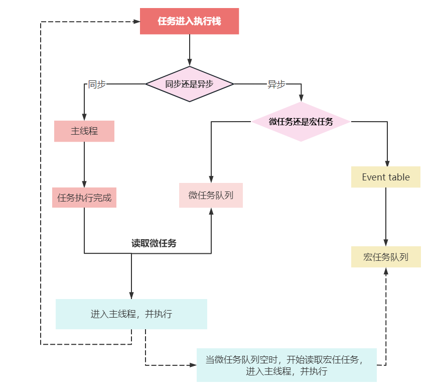
代码分析 一
<div>正文内容</div> <script> console.log("同步开始---"); const div = document.createElement("div"); div.innerHTML = "新加的内容"; document.body.appendChild(div); const list = document.querySelectorAll("div"); console.log("div的个数----", list.length);setTimeout(() => {
console.log(“timeout中代码”);
alert(“阻塞 timeout”);
});
console.log(“同步进行中—-“);
Promise.resolve().then(() => {
console.log(“Promise的then方法中代码”);
alert(“阻塞 Promise”);
});
console.log(“同步结束—-“);- 在点击确认了`alert`的弹窗后(也就是执行完微任务后)，才会进行DOM渲染，接着执行宏任务代码分析 二
console.log("同步1");setTimeout(function fn1() {
console.log(“定时器为宏任务”);
}, 0);new Promise((resolve, reject) => {
console.log(“同步2”);
resolve(“a”);
})
.then(function fn2() {
console.log(“then方法为微任务1”);
})
.then(function fn3() {
console.log(“then方法为微任务2”);
});console.log(“同步3”);
分析上面代码的执行步骤： 1、宏任务：执行整个代码（<script>标签中的代码） - （1）：先执行同步任务console.log("同步1")，输出 "同步1" - （2）：遇到 setTimeout，加入到宏任务队列 - （3）：遇到 Promise 的构造函数，属于同步任务，输出 "同步2" - （4）：遇到 Promise 的 then 方法，加入微任务队列（1 个 then，加入微任务队列） - （5）：接着执行后面的同步代码 console.log("同步3");输出 "同步 3" 2、微任务：执行微任务对列（promise 的 then 方法中的回调） - （1）： 从微任务队列中取出第一个任务（第一个 then 的回调）执行，输出："then方法为微任务1" 这个 then 方法执行后又产生了一个微任务，加入到了微任务队列。 - （2）：从微任务队列中取出刚加的微任务，并执行，输出 "then方法为微任务2" 3、执行渲染操作，更新界面 4、宏任务：取出宏任务队列中的任务（setTimeout 的回调函数 fn1）并执行，最后输出 "定时器为宏任务"代码分析 三
setTimeout(() => { console.log("ok"); }); new Promise((resolve, reject) => { console.log(1); resolve(); }) .then(() => { console.log(2); }) .then(() => { console.log(3); }) .then(() => { console.log(4); }) .then(() => { console.log(5); });new Promise((resolve, reject) => {
console.log(10);
resolve();
})
.then(() => {
console.log(20);
})
.then(() => {
console.log(30);
})
.then(() => {
console.log(40);
})
.then(() => {
console.log(50);
});// 执行结果：1 10 2 20 3 30 4 40 5 50 ok
分析上面代码的执行步骤： 宏任务：执行整个代码（<script>标签中的代码） - （1）：遇到异步的宏任务，添加到宏任务队列。然后接着向下执行代码 - （2）：遇到同步任务，new Promise(...)，则打印 1 ，然后 Promise 的状态改变，向微任务队列中添加第 1 个微任务() => { console.log(2); } - （3）：接着遇到同步任务，new Promise(...),则打印 10，然后然后 Promise 的状态改变，向微任务队列中添加第 2 个微任务() => { console.log(20);} - （4）：同步任务执行完，开始从微任务队列中取出第 1 个微任务执行，打印 2，然后返回成功的 Promise 对象，向微任务队列中添加第 3 个微任务() => { console.log(3);}，出栈。 - （5）：接着从微任务队列中取出第 2 个微任务执行，打印 20，然后然后返回成功的 Promise 对象，向微任务队列中添加第 4 个微任务() => { console.log(30);}，出栈。 - （6）：接下来重复上面的步骤 3 和 4，不断取出对应的微任务执行，在执行的过程中又产生新的微任务。等所有微任务全部执行完，最后去宏任务队列取出宏任务，并执行，所以最后输出 “ok" >要注意：先添加微任务，再执行 - **并不是**先把第一个`new Promise`里的微任务执行完再执行第二个`new Promise`里的微任务 - 谁先添加到队列里，先执行谁代码分析 四
- 这是一道经典的面试题，熟称让人失眠的一道面试题
const p2 = Promise.resolve() .then(() => { console.log(0); // 慢两拍 return Promise.resolve(4); }) .then((data) => { console.log(data); });Promise.resolve()
.then(() => {
console.log(1);
})
.then(() => {
console.log(2);
})
.then(() => {
console.log(3);
})
.then(() => {
console.log(5);
})
.then(() => {
console.log(6);
});
//0 1 2 3 4 5 6>记住： - 在`then`方法里返回一个`Promise`对象，会**慢两拍**！